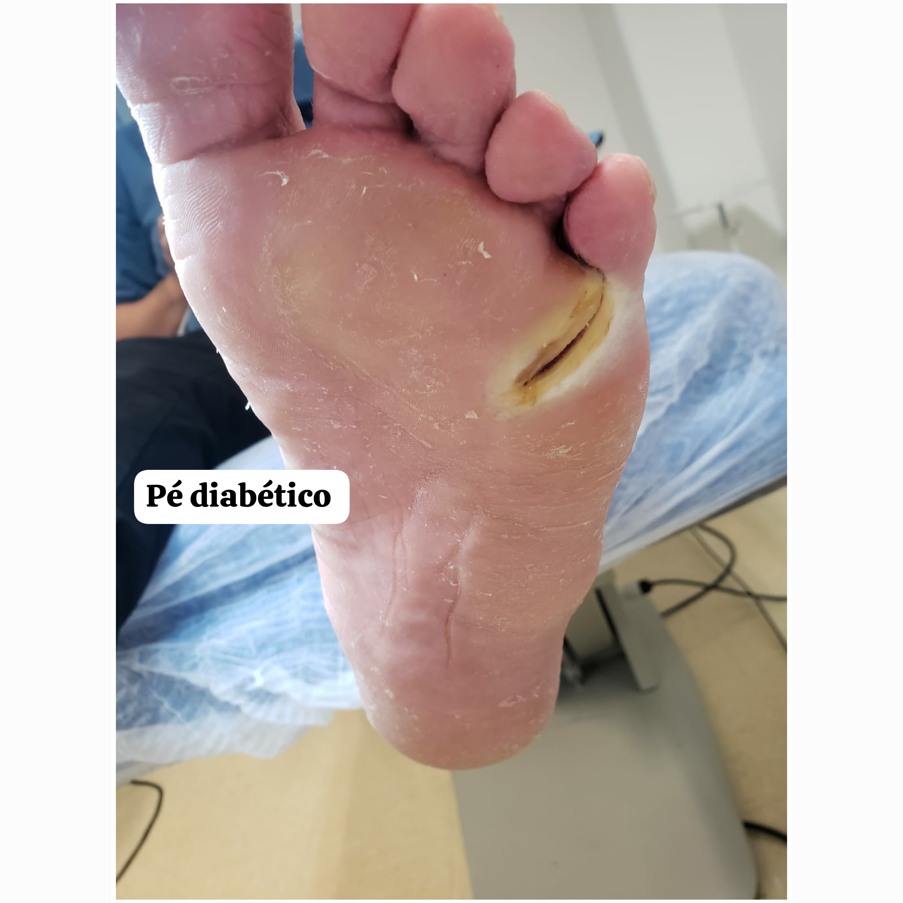
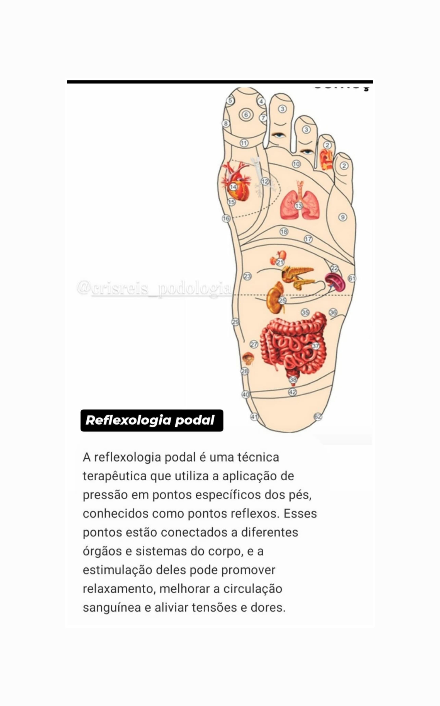
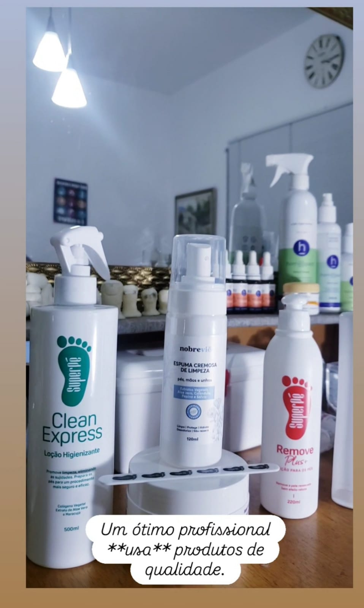

Cristiane Reis Podologia
Pés saudáveis, vida mais leve.
Cuide-se com quem entende de verdade!
Serviços
Podoprofilaxia
Conjunto de cuidados regulares para evitar lesões e complicações.
Onicocriptose
Unha encravada, ela pode causar dor, inflamação, infecção e até deixar uma carne esponjosa.
Calos e Calosidade
Hiperqueratose, espessamento da camada mais superficial da pele. Faço tratamentos com remoção do excesso de queratina, hidratação, orientação e acompanhamento.
Onicomicose
Infecção fúngica que afeta as unhas. Causados principalmente por dermatófitos.
Órteses
Posso corrigir, prevenir deformidades, dores e sobrecargas nos pés e dedos utilizando as órteses, feitas de silicone e EVA.
Rachaduras e ressecamento
Posso tratar fissuras e xeroses.
Verruga Plantar
Lesão na sola do pé, causada pelo vírus HPV (Papilomavírus Humano), ele possui níveis de gravidade, podendo aparecer com uma elevação arredondada e áspera, pode causar dor ao andar.
Atendimento ao pé diabético
Faço tratamento exclusivo aos pacientes com diabetes.


